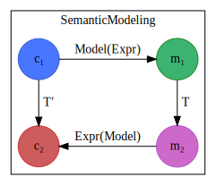

SemanticModels.jl Documentation

SemanticModels is a system for representing scientific knowledge inherent to scientific model structure. Our philosophy is that over the next few decades, the adoption of computation as a first class pillar of scientific thought will be complete, and scientists will do a majority of their thinking about and communicating of ideas in the form of writing and using code. Attempts to teach machines science based on reading texts intended for human consumption is overwhelming, so we use text written for computers as a starting point. This involves extracting meaning from code, and reconciling such information with exogenous sources of information about the world.
Scientists typically write procedural code based on libraries for solving mathematical models. When this procedural code is expressed in data-oriented pipelines or workflows, such workflows have limited composability. The most mature scientific field in terms of data-oriented workflows is bioinformatics, where practicing informaticists spend a great deal of time plumbing together procedural scripts and adapting data formats. Automatic adaptation of modeling codes requires a semantic understanding of the model that the code implements/computes. SemanticModels.jl is intended to augment scientists' modeling capabilities by extracting semantic information and facilitating different types of model manipulation and generation.
We focus on three problems:
- Model augmentation: taking an existing model and modifying its components to add features or make comparisons.
- Metamodel construction: combining models or components of models to automatically generate scientific computing workflows.
- Model Verification: given a model, corpus of previous applications of that model, and an input to the model, detect if the model is properly functioning.
SemanticModels leverages technology from program analysis and natural language processing in order to build a knowledge graph representing the connections between elements of code (variables, values, functions, and expressions) and elements of scientific understanding (concepts, terms, relations). This knowledge graph supports reasoning about how to modify models, construct metamodels, and verify models.
The most mature aspects of the library at this point are Knowledge Extraction and modification (Dubstep).
Table of Contents
- SemanticModels.jl Documentation
- Intended Use Cases
- News
- ModelTools
- Getting Started Example
- Semantic Modeling Theory
- What is a model?
- Analyzing scientific models as programs
- Categories for Science
- Models in the Category of Types
- Model Augmentation
- Up Next
- Dubstep
- Knowledge Graphs
- Knowledge Extraction
- Model Validation with Dynamic Analysis
- Library Reference
- Multiple Knowledge Graphs
- Approaches
- Introduction
- Scientific Domain and Relevant Papers
- Information Extraction
- Knowledge Representation
- Model Representation and Execution
- Scientific Workflows (Pipelines)
- Metamodels as Computation Graphs
- Metamodel Constraints
- Metamodel Transformations
- Types
- User Interface
- Generating new models
- Validation
- Next Steps
- Slides
- Extracting Model Structure for Improved Semantic Modeling
- Goals
- Running Example: Influenza
- Running Example: Modeling types
- Scientific Domain
- Graph of SIR Model
- Knowledge Extraction Architecture
- Example Input Packages
- Model Representation and Execution
- Knowledge Graph
- Knowledge Graph Schema
- Flu Metamodel Pipeline
- Knowledge Graph Reasoning
- How do we get from Weather to Cost?
- How do we get from Weather+Demographics to Cost?
- Knowledge Graph Reasoning Open Questions
- Infectious Disease Metamodel
- Static vs Dynamic Graph
- Validation
- Next Steps
- FluModel
- Developer Guidelines
This material is based upon work supported by the Defense Advanced Research Projects Agency (DARPA) under Agreement No. HR00111990008.